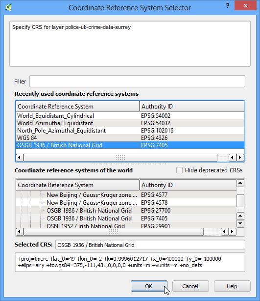

Aflarea numărului de noduri dintr-un strat
QGIS nu dispune de o funcție internă pentru a calcula numărul de noduri al fiecărei entități dintr-un strat. Dar un plugin foarte util, numit Vertices Counter, umple acest gol adăugând, de asemenea, și alte funcțiuni utile.
Procedura
Găsiți și instalați pluginul Vertices Counter. Citiți și Utilizarea Plugin-urilor, pentru detalii privind instalarea plugin-urilor în QGIS.

Încărcați orice strat de tip poligon sau linie în QGIS. .

În mod implicit, stratul activ va fi selectat cu Layer Selection. De asemenea, ați putea selecta orice alte straturi încărcate, sau să deschideți un strat direct de pe disc. Plugin-ul are o opțiune numită Create new column, care poate adăuga un număr de vârfuri ca atribut pentru fiecare entitate. Acest lucru este util pentru o mulțime de cazuri, așa că vom selecta această opțiune. Acum, faceți clic pe butonul :guilabel: Count Vertices iar secțiunea Results va fi populată cu numărul de vârfuri al fiecărei entități. Puteți vedea chiar Total Vertices, afișat în lateral.

Înapoi, în fereastra principală QGIS, vom verifica dacă o nouă coloană a fost adaugată în stratul nostru. Faceți clic dreapta pe strat și selectați Open Attribute Table.

După cum veți observa, o nouă coloană, numită Noduri, va fi adăugată, având completate valorile care reprezintă numărul de vârfuri pentru fiecare entitate. Această coloană poate fi utilă dacă doriți să faceți o interogare de genul Selectare entități cu numărul de noduri > X.